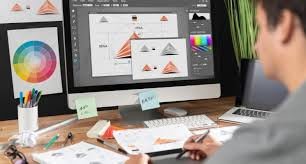

|
Construye documento electrónicos utilizando las distintas herramientas de inserción y diseño,favoreciendo la comunicación ética y creativa, cubriendo las necesidades de su contexto. Emplea la manipulación de plantillas, la automatización de procedimientos y conversión de documentos en PDF, favoreciendo su creatividad en la comunicación y respetando los derechos de autor, atendiendo diversas necesidades de su contexto.
Emplea la hoja de cálculo con funciones avanzadas, tablas dinámicas y/o macros, para resolver problemas de manera consciente y responsable de su entorno laboral y académico. Plantea soluciones a problemas del entorno personal, académico y laboral mediante la creación de gráficos combinados y de dispersión que le permitan tomar decisiones de manera creativa y reflexiva. Propone soluciones a situaciones de contexto de forma creativa basado en la en equipo mediante tablas dinámicas o macros que automatizan procedimientos en un entorno laboral, personal y académico.
Emplea las presentaciones electrónicas para expresarse creativamente. Plantea soluciones a problemas del entorno personal,académico y laboral mediante la creación presentaciones electrónicas que le permita expresar una idea.
Define diferentes tipos de redes y comunidades virtuales, tanto personales, laborales y escolares, para el intercambio de información y archivos multimedia en el ámbito laboral y profesional de manera ética y responsable. Utiliza plataformas con actividades educativas innovadoras, así como comunidades virtuales, del ámbito escolar o profesional que favorezcan su formación continua.
Propone las características del equipo de cómputo, que satisfacen las necesidades de diferentes usuarios al emplear diversas configuraciones para un óptimo funcionamiento en el ámbito educativo, laboral y profesional, de forma innovadora y responsable. Utiliza las herramientas del sistema operativo para resolver problemas con los medios de almacenamiento y la operación del sistema, trabajando de maneraresponsable y colaborativa en un contexto educativo, laboral o profesional. Aplica estrategias de mantenimiento para conservar en óptimo funcionamiento el equipo decómputo previniendo problemas de operación enlos ámbitosor ganizacionales, educativos y profesionales. Resuelve diferentes problemas de conectividad para compartir información y archivos, empleando periféricos, redes alámbricas e inalámbricas en ambientes laborales, educativos y profesionales con una actitud ética y de servicio.
Utiliza la metodología para el desarrollo de software, favoreciendo el trabajo colaborativo y creativo en la resolución de problemas de sucontexto. Emplea los diferentes modelos de bases de datos, mostrando disposición al trabajo metódico y organizado, para resolver problemas de su contexto.
Plantea el uso de diagramas de flujo y algoritmos, fomentando su desarrollo creativo, para solucionar problemas cotidianos de su contexto. Explica los lenguajes de programación y sus metodologías de forma consciente, asertiva y empática, en la resolución de problemas del ámbito académico y laboral. Propone la creación de códigos con instrucciones secuenciales, condicionales y/o repetitivas, asumiendo la frustración como parte del proceso de aprendizaje, en la solución de problemas de su entorno.
Crear entornos gráficos mediante el uso de códigos. Utiliza los elementos de programación para resolver un problema.
|
|
Construye una página web,utilizando elementos del software de diseño web, favoreciendo su creatividad e innovación, para comunicar información en distintos contextos.
Ilustra ideas publicitarias y de comunicación a través de diseño de imágenes digitales, utilizando diferentes herramientas de las aplicaciones de software de diseño, en un ambiente responsable y creativo. Crea animaciones multimedia, favoreciendo un ambiente de tolerancia y creatividad, para expresar ideas que den solución a problemas de su entorno. Aplica el software de diseño editorial para realizar estrategias creativas e innovadoras, en la transmisión de ideas, favoreciendo su creatividad en un ambiente ético y responsable dentro de su contexto.
|  |
Identifica la diferencia entre una aplicación móvil y un programa de escritorio. Muestra las ventajas de la creación de una aplicación móvil. Elabora una aplicación móvil mediante las herramientas tecnológicas disponibles.